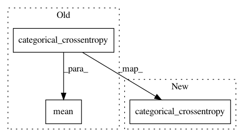

c94cf4b32a22504a01953c917402ab27b926875f,keras/objectives.py,,categorical_crossentropy,#Any#Any#,37
Before Change
def categorical_crossentropy(y_true, y_pred):
"""Expects a binary class matrix instead of a vector of scalar classes.
"""
return K.mean(K.categorical_crossentropy(y_pred, y_true), axis=-1)
def binary_crossentropy(y_true, y_pred):
return K.mean(K.binary_crossentropy(y_pred, y_true), axis=-1)
After Change
def categorical_crossentropy(y_true, y_pred):
"""Expects a binary class matrix instead of a vector of scalar classes.
"""
return K.categorical_crossentropy(y_pred, y_true)
def binary_crossentropy(y_true, y_pred):
return K.mean(K.binary_crossentropy(y_pred, y_true), axis=-1)
In pattern: SUPERPATTERN
Frequency: 3
Non-data size: 3
Instances
Project Name: keras-team/keras
Commit Name: c94cf4b32a22504a01953c917402ab27b926875f
Time: 2016-02-01
Author: xavier@whirlscape.com
File Name: keras/objectives.py
Class Name:
Method Name: categorical_crossentropy
Project Name: keras-team/keras
Commit Name: af0d18f6164952a6610f1c9c14d2dded7e6c488e
Time: 2017-02-21
Author: francois.chollet@gmail.com
File Name: keras/metrics.py
Class Name:
Method Name: categorical_crossentropy
Project Name: broadinstitute/keras-rcnn
Commit Name: d8d0f8f620232c596e621a723d89f54299bce79a
Time: 2017-08-27
Author: allen.goodman@icloud.com
File Name: keras_rcnn/layers/losses/_rcnn.py
Class Name: RCNNClassificationLoss
Method Name: compute_loss